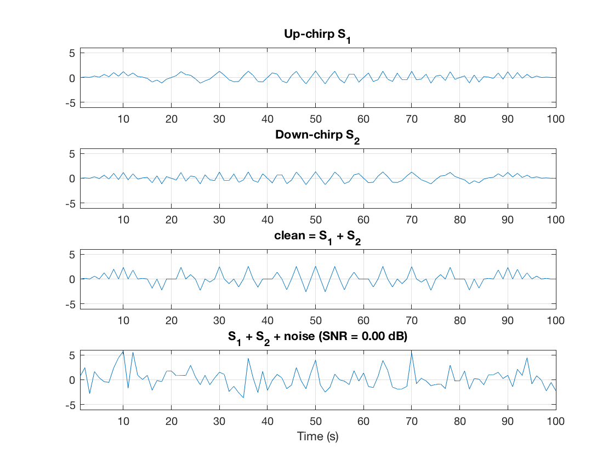
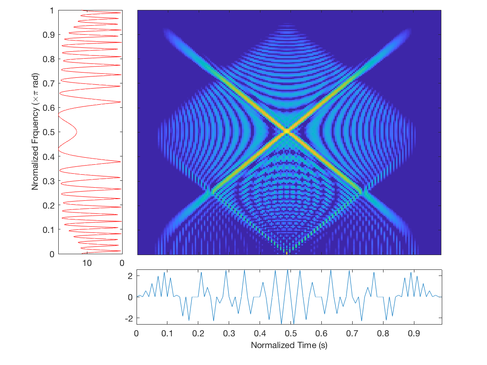
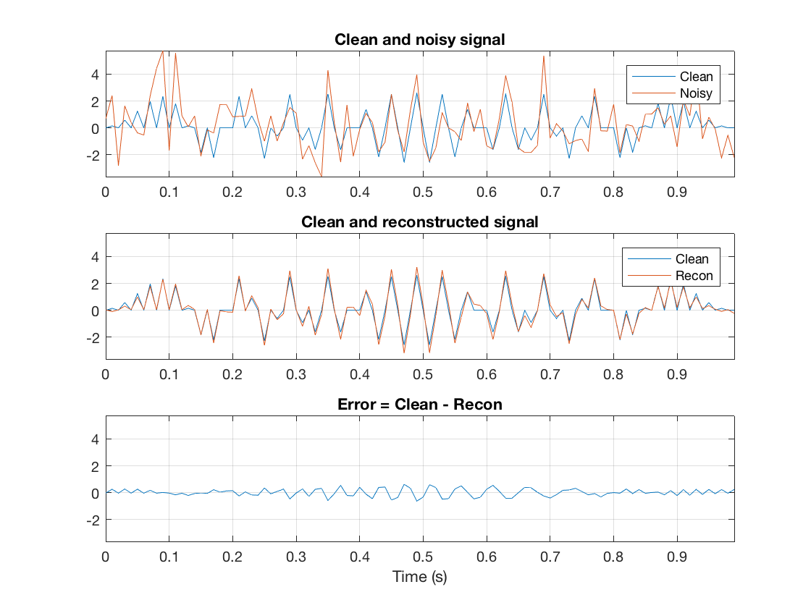
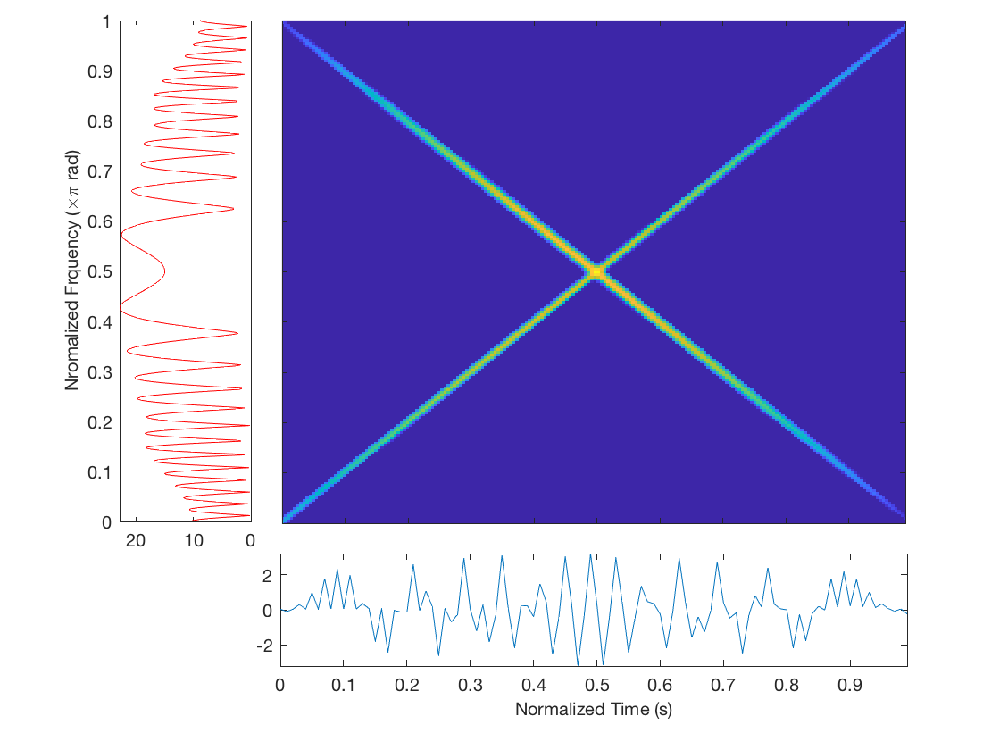
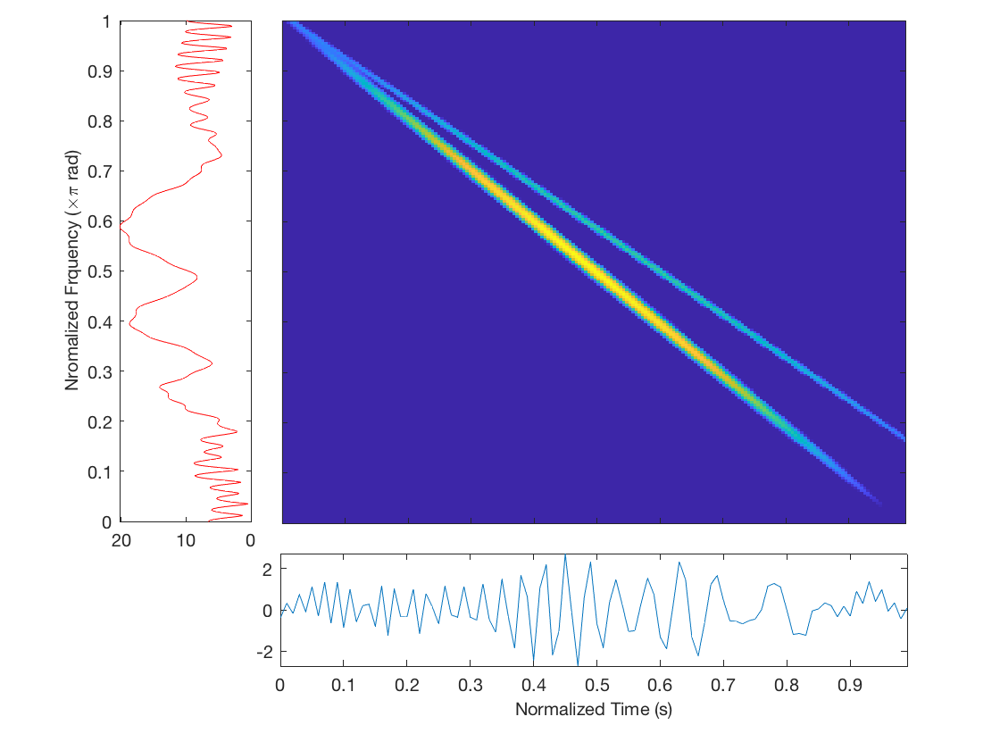

Decompose Deep Crossed Chirplets
This simulation compares the results of MPEM and MLE algorithm for the estimation of the components of a signal, consisting of an upward and a downward chirplet, embedded in noise. open
Contents
Create and display the simulated signal
First, let's synthesize the simulated signal, which consists of an upward chirplet s1, chirp-rate changing from 0 to , and a downwoard chriplet s2, from to 0.
N = 100; % signal size P1 = [10*exp(1i*0), N/2+1, pi/2, pi/N, N/3]; % up-chirplet 0 -> pi P2 = [10*exp(1i*0), N/2+1, pi/2, -pi/N, N/3]; % down-chirplet 0 -> -pi s1 = real(make_chirplets(N, P1)); % the synthesized signal s2 = real(make_chirplets(N, P2)); % the synthesized signal s = s1+s2;
Then, we add white Gaussian noise at the desired signal-to-noise (SNR) level, d_snr, in dB. You can change d_snr for your experiments.
d_snr = 0.0; % desired SNR [spn, ns, signr] = add_noise(s, d_snr); % add noise to the signal (require communication toolbox) fprintf('Desired SNR = %.2f dB, estimated SNR = %.2f dB\n', d_snr, signr)
We now display the signal. Note that the noisy signal may be different from trial to trial.
figure % the simulated signal sh = subplot(414); plot(spn), grid on, axis tight axlm = axis(sh); ay_max = max(floor(abs(axlm(3:4)) + .5)); ax_lmt = [axlm(1:2), [-1 1] * ay_max]; axis(sh, ax_lmt) xlabel('Time (s)') title(sprintf('S_1 + S_2 + noise (SNR = %.2f dB)', d_snr)); % signal s1 sh = subplot(411); plot(s1), grid on, axis(sh, ax_lmt), title('Up-chirp S_1'); % signal s2 sh = subplot(412); plot(s2), grid on, axis(sh, ax_lmt), title('Down-chirp S_2'); % s = s1 + s2 sh = subplot(413); plot(s), grid on, axis(sh, ax_lmt), title('clean = S_1 + S_2');
Show the signal in time-domain.

Show time-freqency distributions of the simulated signal in short-time Fourier transform (STFT), Viger-Ville distribution (WVD) and adpative chirplet spectrum (ACS)
fs = 1; % normalized sampling frequency P = [P1; P2]; show_decomp(s, P, fs, 'Clean signal')
- Short-time Fourier transform of clean signal
- Short-time Fourier transform of noisy signal
- Vigner-Ville distribution of clean signal

- Adaptive chirplet spectrum of clean signal

Perform adaptive chirplet decomposition with MP
Next we decompose the simulated signal with MPEM and MLE algorithms.
tests = hilbert(spn); % convert it into analytic signal Q = 2; % number of atoms desired [~, P_mpem] = test_mpem_act(Q, tests); % with MPEM algorithm [~, P_mle] = test_mle_act(Q, tests); % with MLE algorithm
Compare the original and recontructed signals
Finally, we compare the results from MPEM and MLE algorithms.
Results from MPEM algorithm
p_mpem = table2array(P_mpem); fig_name = get_fig_name('ExpectMax'); show_decomp(spn, p_mpem, fs, fig_name) % on t-f plane comp_decomp(s, spn, p_mpem, fig_name) % on time domain
- Comparison between clean and reconstructed signal (MPEM)

- Adaptive chirplet spectrum of reconstruced signal (MPEM)

Results from MLE algorithm
p_mle = table2array(P_mle); fig_name = get_fig_name('MaxLikeliEst'); show_decomp(spn, p_mle, fs, fig_name) % t-f plane comp_decomp(s, spn, p_mle, fig_name) % on time domain
- Comparison between clean and reconstructed signal (MLE)
- Adaptive chirplet spectrum of reconstruced signal (MLE)

Compare squared error between MPEM and MLE algrithms
comp_sqerr(s, P_mpem, P_mle)
We can see that the point-wise squared error of MLE algorithm is usually larger than that of MPEM algorithm.